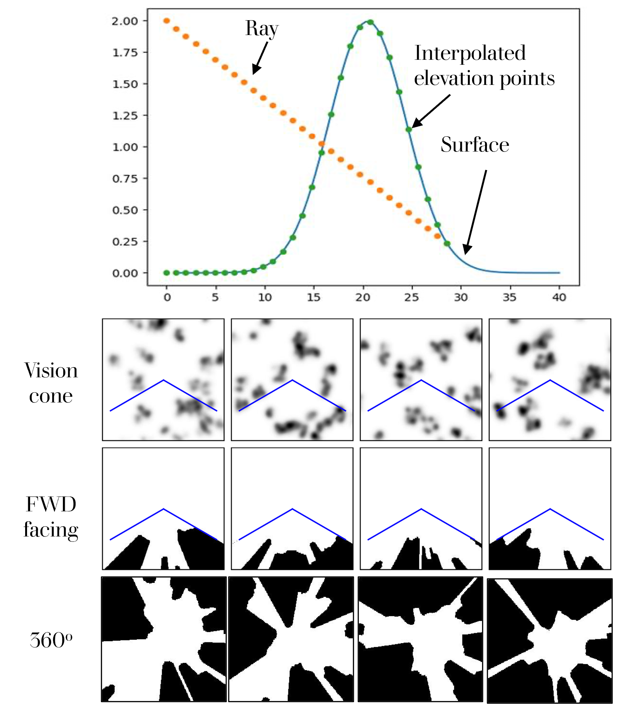
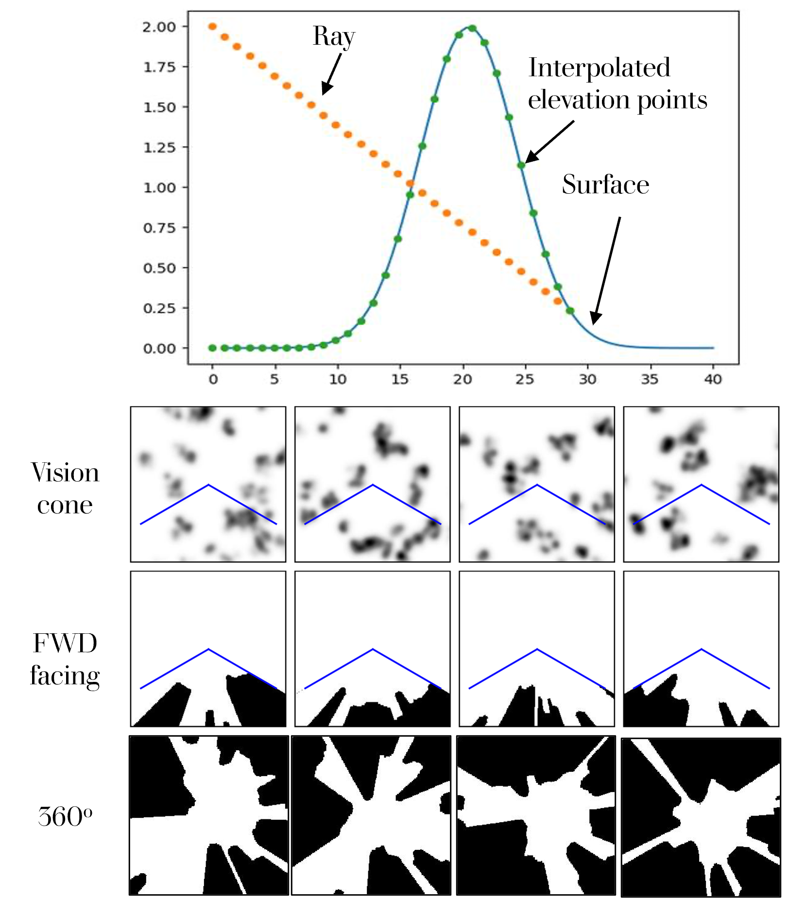
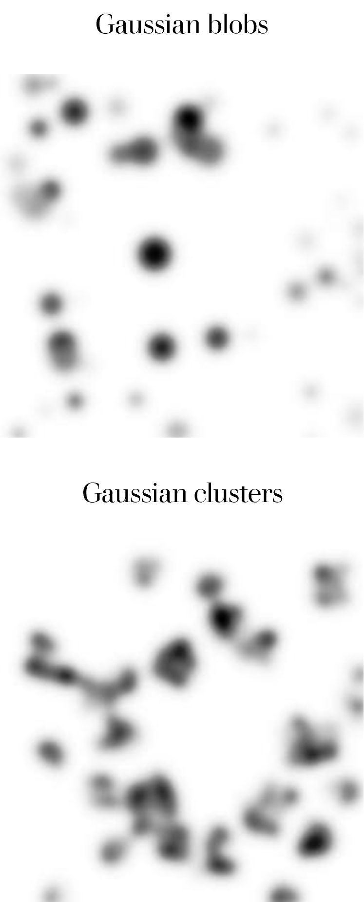

Custom Masks
As opposed to the original work that utilized randomly generated masks, we used ray-tracing technique to generate two types of correlated masks - 360-deg masks and forward-facing masks, as shown below.

Our research is offroad autonomy. In such, having a good understanding of the environment we are operating in is imperative for a successfull mission. When observing an unknown cluttered environment, a robot often encounters large occlusions. In the traditional planning paradigm, the missing data is either assumed occupied or free. This results in a motion plan that is either unsafe or conservative at best. Hence, here we utilize a mask-aware transformer to fill in the missing data to obtain a more complete map leading to better planning and safer outcomes.
In this project, we use a transformer-based model designed specifically for large-hole image inpainting. It seamlessly integrates the strengths of transformers and convolutions, enabling efficient processing of high-resolution images. Each component of this framework is crafted to ensure both high fidelity and diversity in the reconstructed images. At its core, it is a custom inpainting-oriented transformer block, featuring an attention mechanism that dynamically aggregates non-local information exclusively from valid tokens, as indicated by an adaptive mask.
Uncertainty prediction in inpainted images plays a critical role in enhancing the safety and reliability of decision-making processes, particularly in high-stakes applications like autonomous driving. When predictions are made in regions with missing or occluded data, understanding the confidence level of the inpainted content allows systems to assess the potential risks of relying on such information. We added this capability to the original work used here. The style manipulation module (SMM) enabled us to generate an ensemble of inferences for the same input image. The disagreement between the inferred images allows us to estimate the uncertainty.
As opposed to the original work that utilized randomly generated masks, we used ray-tracing technique to generate two types of correlated masks - 360-deg masks and forward-facing masks, as shown below.
Two types of dataset were generated for this project. The first dataset features Gaussian blobs, while the second comprises clusters of Gaussian distributions designed to simulate elevation data.

The Style Manipulation Module (SMM) in the original mask-aware Transformer allowed us to quantify uncertainty in predictions. This module endows the framework with pluralistic generation by changing the weights normalization of convulational layers in the reconstruction procedure with additional noise input. This was done to encourage diversity of generation. We utilized this module to generate an ensemble of outputs for the same input image. The disagreement between the different outputs generated helps us quantify the statistics associated with the quality of in-painting: RMSE and variance.